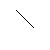

Edge

The Edge button in the toolbar supports the drawing of an undirected
edge between two existing nodes.
To draw the edge, do the following:
- Select the edge button in the toolbar.
- Move the mouse inside an existing node as the starting node.
- Click the mouse.
- Drag the mouse to the inside of another node as the ending node.
- Release the mouse.